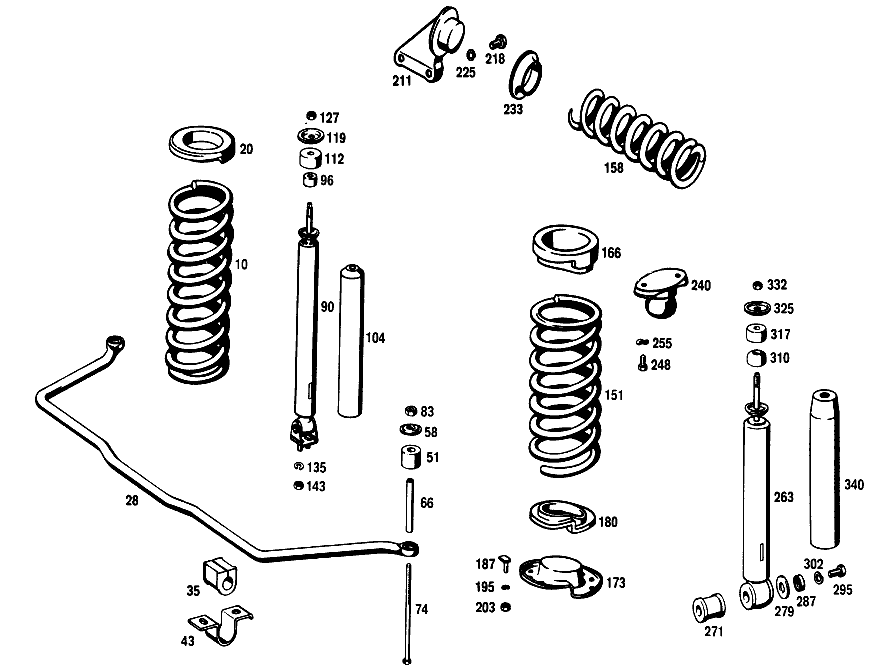

| № | Артикул | Название | Кол. | Примечание | Ограничение |
|---|---|---|---|---|---|
| 10 | A 111 321 15 04 | ПЕРЕДНЯЯ ПРУЖИНА | 2 | [010] FROM CHASSIS 016976 INSTALLED ON,SEE FOOTN.27 [027] 016926, 016928, 016932, 016959, 016961- 016963, 016965, 016966, 016968- 016970, 016972- 016974. | |
| 20 | A 111 322 03 85 | Резиновая опора | 2 | ПО НЕОБХОДИМОСТИ 20.0 MM [010] FROM CHASSIS 016976 INSTALLED ON,SEE FOOTN.27 [027] 016926, 016928, 016932, 016959, 016961- 016963, 016965, 016966, 016968- 016970, 016972- 016974. | |
| 28 | A 111 323 13 65 | СТАБИЛИЗ. ПОПЕР. УСТОЙЧ. | - | ||
| 28 | A 111 323 14 65 | СТАБИЛИЗ. ПОПЕР. УСТОЙЧ. | 1 | 21.5 MM [010] FROM CHASSIS 016976 INSTALLED ON,SEE FOOTN.27 [027] 016926, 016928, 016932, 016959, 016961- 016963, 016965, 016966, 016968- 016970, 016972- 016974. | |
| 35 | A 111 323 09 85 | САЙЛЕНТ-БЛОК | 2 | [010] FROM CHASSIS 016976 INSTALLED ON,SEE FOOTN.27 [027] 016926, 016928, 016932, 016959, 016961- 016963, 016965, 016966, 016968- 016970, 016972- 016974. | |
| 43 | A 111 323 11 40 | Держатель | 2 | ||
| 51 | A 111 323 00 44 | Резиновый буфер | 8 | ||
| 58 | A 111 323 02 67 | Тарелка | 8 | ||
| 66 | A 111 991 10 40 | Проставочная трубка | 2 | ||
| 74 | A 111 990 05 01 | болт | 2 | ||
| 83 | N 000934 008010 | Гайка | - | ||
| 83 | N 304032 008006 | Шестигранная гайка | 4 | M8 | |
| 90 | A 108 320 00 30 | Амортизатор | 2 | СПЕРЕДИ [006] 014 FROM CHASSIS 020659 [025] OLD PART NO.REMAINS APPLICABLE TO H.D.SPRINGS ON SPECIAL REQUEST | |
| 90 | A 108 320 00 30 | Амортизатор | 2 | СПЕРЕДИ [008] 021/023 FROM CHASSIS 020579 | |
| 96 | A 000 323 12 85 | Резиновая опора | 4 | [007] 021 UP TO CHASSIS 020578 [005] 014 UP TO CHASSIS 020658 | |
| 96 | A 000 323 12 85 | Резиновая опора | 2 | [006] 014 FROM CHASSIS 020659 [008] 021/023 FROM CHASSIS 020579 | |
| 104 | A 111 323 01 38 | Защитная втулка | 2 | ||
| 112 | A 180 326 01 68 | Резиновое кольцо | 2 | [006] 014 FROM CHASSIS 020659 [008] 021/023 FROM CHASSIS 020579 | |
| 119 | A 115 323 07 67 | Тарелка | 2 | [006] 014 FROM CHASSIS 020659 [008] 021/023 FROM CHASSIS 020579 | |
| 127 | N 000934 010015 | Гайка | - | ||
| 127 | N 308673 010000 | Шестигранная гайка | 4 | M10X1 [006] 014 FROM CHASSIS 020659 [008] 021/023 FROM CHASSIS 020579 | |
| 135 | N 000127 008203 | Пружинное кольцо | 4 | ||
| 143 | N 000934 008010 | Гайка | - | ||
| 143 | N 304032 008006 | Шестигранная гайка | 4 | M8 | |
| 151 | A 110 324 30 04 | ЗАДНЯЯ ПРУЖИНА | 2 | ||
| 158 | A 110 329 04 01 | ПРУЖИНА УРАВНОВ. | 1 | ||
| 166 | A 108 325 02 85 | Резиновая опора | 2 | ПО НЕОБХОДИМОСТИ 18mm | |
| 173 | A 110 325 07 15 | Тарелка пружины | 2 | ВНИЗУ | |
| 180 | A 110 325 01 85 | Резиновая опора | 2 | ||
| 187 | A 110 325 01 75 | болт | 4 | ||
| 195 | N 000127 008203 | Пружинное кольцо | 4 | ||
| 203 | N 000934 008010 | Гайка | - | ||
| 203 | N 304032 008006 | Шестигранная гайка | 4 | M8 | |
| 211 | A 110 320 23 43 | ДЕРЖАТЕЛЬ | 1 | ||
| 218 | A 110 990 03 01 | БОЛТ | 2 | TO 110 320 17 43,110 320 23 43 | |
| 225 | N 000127 012200 | Пружинное кольцо | 2 | ||
| 233 | A 110 329 00 85 | КОЛЬЦО РЕЗИНОВОЕ | 2 | ПО НЕОБХОДИМОСТИ 18mm | |
| 240 | A 110 320 05 44 | Резиновый буфер | 2 | ||
| 248 | N 000933 008145 | Винт | 4 | M8 X 18 | |
| 255 | N 000137 008204 | Пружинная шайба | - | ||
| 255 | N 000137 008212 | Пружинная шайба | 4 | ||
| 263 | A 111 326 01 00 | АМОРТИЗАТОР | - | ||
| 263 | A 108 320 01 31 | Амортизатор | 2 | СЗАДИ [015] ON SPECIAL REQUEST,HARDER SPRING SUSPENSION [006] 014 FROM CHASSIS 020659 [008] 021/023 FROM CHASSIS 020579 | |
| 271 | A 110 326 02 81 | - Резиновая опора | 2 | ||
| 279 | A 110 990 02 40 | Диск | 2 | ||
| 287 | A 110 326 00 67 | Тарелка | 2 | ||
| 295 | N 000933 010238 | Винт | - | ||
| 295 | N 304017 010028 | Винт с 6-гранной головкой | 2 | M10X20\-8.8 [002] FROM CHASSIS 007861 | |
| 302 | N 912004 010102 | Пружинное кольцо | 2 | ||
| 310 | A 110 323 05 85 | Резиновая опора | 2 | TO 110 326 02 00,001 326 05 00,111 326 01 00 | |
| 317 | A 180 326 01 68 | Резиновое кольцо | 2 | СВЕРХУ | |
| 325 | A 115 323 07 67 | Тарелка | 2 | СВЕРХУ [006] 014 FROM CHASSIS 020659 [008] 021/023 FROM CHASSIS 020579 | |
| 332 | N 000936 010003 | ГАЙКА | 4 | [006] 014 FROM CHASSIS 020659 [008] 021/023 FROM CHASSIS 020579 | |
| 340 | A 110 326 00 59 | КОЛПАЧОК | 2 | [017] 014 UP TO CHASSIS 030866 [019] 021/023 UP TO CHASSIS 032553 | |
| 340 | A 110 326 02 59 | КОЛПАЧОК | 2 | [018] 014 FROM CHASSIS 030867 [020] 021/023 FROM CHASSIS 032554 | |
| A 111 321 13 04 | ПЕРЕДНЯЯ ПРУЖИНА | 2 | [009] UP TO CHASSIS 016975 NOT INSTALLED ON,SEE FOOTN.27 [027] 016926, 016928, 016932, 016959, 016961- 016963, 016965, 016966, 016968- 016970, 016972- 016974. | ||
| A 111 321 10 04 | ПЕРЕДНЯЯ ПРУЖИНА | 2 | [009] UP TO CHASSIS 016975 NOT INSTALLED ON,SEE FOOTN.27 [027] 016926, 016928, 016932, 016959, 016961- 016963, 016965, 016966, 016968- 016970, 016972- 016974. [015] ON SPECIAL REQUEST,HARDER SPRING SUSPENSION | ||
| A 111 321 19 04 | Упр.элемент подвески пер. | 2 | [010] FROM CHASSIS 016976 INSTALLED ON,SEE FOOTN.27 [027] 016926, 016928, 016932, 016959, 016961- 016963, 016965, 016966, 016968- 016970, 016972- 016974. | ||
| A 110 321 09 04 | ПЕРЕДНЯЯ ПРУЖИНА | 2 | [012] FROM CHASSIS 014849 NOT INSTALLED ON 014901 INSTALLED ON 014845 [015] ON SPECIAL REQUEST,HARDER SPRING SUSPENSION [016] ON SPECIAL REQUEST, 300-WATT GENERATOR | ||
| A 120 322 00 84 | ВКЛАДКА | 2 | ПО НЕОБХОДИМОСТИ 3.0 MM [009] UP TO CHASSIS 016975 NOT INSTALLED ON,SEE FOOTN.27 [027] 016926, 016928, 016932, 016959, 016961- 016963, 016965, 016966, 016968- 016970, 016972- 016974. | ||
| A 111 322 01 84 | ВКЛАДКА | 2 | ПО НЕОБХОДИМОСТИ 5.5 MM [009] UP TO CHASSIS 016975 NOT INSTALLED ON,SEE FOOTN.27 [027] 016926, 016928, 016932, 016959, 016961- 016963, 016965, 016966, 016968- 016970, 016972- 016974. | ||
| A 111 322 02 84 | ВКЛАДКА | 2 | ПО НЕОБХОДИМОСТИ 8.0 MM [009] UP TO CHASSIS 016975 NOT INSTALLED ON,SEE FOOTN.27 [027] 016926, 016928, 016932, 016959, 016961- 016963, 016965, 016966, 016968- 016970, 016972- 016974. | ||
| A 111 322 03 84 | ВКЛАДКА | 2 | ПО НЕОБХОДИМОСТИ 10.0 MM [009] UP TO CHASSIS 016975 NOT INSTALLED ON,SEE FOOTN.27 [027] 016926, 016928, 016932, 016959, 016961- 016963, 016965, 016966, 016968- 016970, 016972- 016974. | ||
| A 111 322 04 84 | ВКЛАДКА | 2 | ПО НЕОБХОДИМОСТИ 12.0 MM [009] UP TO CHASSIS 016975 NOT INSTALLED ON,SEE FOOTN.27 [027] 016926, 016928, 016932, 016959, 016961- 016963, 016965, 016966, 016968- 016970, 016972- 016974. | ||
| A 110 322 12 85 | САЙЛЕНТ-БЛОК | 2 | ПО НЕОБХОДИМОСТИ 13 MM [009] UP TO CHASSIS 016975 NOT INSTALLED ON,SEE FOOTN.27 [027] 016926, 016928, 016932, 016959, 016961- 016963, 016965, 016966, 016968- 016970, 016972- 016974. | ||
| A 110 322 13 85 | САЙЛЕНТ-БЛОК | 2 | ПО НЕОБХОДИМОСТИ 15.5 MM [009] UP TO CHASSIS 016975 NOT INSTALLED ON,SEE FOOTN.27 [027] 016926, 016928, 016932, 016959, 016961- 016963, 016965, 016966, 016968- 016970, 016972- 016974. | ||
| A 110 322 16 85 | САЙЛЕНТ-БЛОК | 2 | ПО НЕОБХОДИМОСТИ 18mm [009] UP TO CHASSIS 016975 NOT INSTALLED ON,SEE FOOTN.27 [027] 016926, 016928, 016932, 016959, 016961- 016963, 016965, 016966, 016968- 016970, 016972- 016974. | ||
| A 110 322 17 85 | САЙЛЕНТ-БЛОК | - | |||
| A 110 322 18 85 | САЙЛЕНТ-БЛОК | 2 | ПО НЕОБХОДИМОСТИ 20.5 MM [009] UP TO CHASSIS 016975 NOT INSTALLED ON,SEE FOOTN.27 [027] 016926, 016928, 016932, 016959, 016961- 016963, 016965, 016966, 016968- 016970, 016972- 016974. | ||
| A 110 322 18 85 | САЙЛЕНТ-БЛОК | 2 | ПО НЕОБХОДИМОСТИ 23 MM [009] UP TO CHASSIS 016975 NOT INSTALLED ON,SEE FOOTN.27 [027] 016926, 016928, 016932, 016959, 016961- 016963, 016965, 016966, 016968- 016970, 016972- 016974. | ||
| A 111 322 04 85 | Резиновая опора | 2 | ПО НЕОБХОДИМОСТИ 22.5 MM [010] FROM CHASSIS 016976 INSTALLED ON,SEE FOOTN.27 [027] 016926, 016928, 016932, 016959, 016961- 016963, 016965, 016966, 016968- 016970, 016972- 016974. | ||
| A 111 322 05 85 | Резиновая опора | 2 | ПО НЕОБХОДИМОСТИ 25.0 MM [010] FROM CHASSIS 016976 INSTALLED ON,SEE FOOTN.27 [027] 016926, 016928, 016932, 016959, 016961- 016963, 016965, 016966, 016968- 016970, 016972- 016974. | ||
| A 111 322 06 85 | Резиновая опора | 2 | ПО НЕОБХОДИМОСТИ 27.5 MM [010] FROM CHASSIS 016976 INSTALLED ON,SEE FOOTN.27 [027] 016926, 016928, 016932, 016959, 016961- 016963, 016965, 016966, 016968- 016970, 016972- 016974. | ||
| A 111 322 07 85 | Резиновая опора | 2 | ПО НЕОБХОДИМОСТИ 30.0 MM [010] FROM CHASSIS 016976 INSTALLED ON,SEE FOOTN.27 [027] 016926, 016928, 016932, 016959, 016961- 016963, 016965, 016966, 016968- 016970, 016972- 016974. | ||
| A 111 322 08 85 | Резиновая опора | 2 | ПО НЕОБХОДИМОСТИ 32.5 MM [010] FROM CHASSIS 016976 INSTALLED ON,SEE FOOTN.27 [027] 016926, 016928, 016932, 016959, 016961- 016963, 016965, 016966, 016968- 016970, 016972- 016974. | ||
| A 111 323 12 65 | СТАБИЛИЗ. ПОПЕР. УСТОЙЧ. | 1 | 20 MM [009] UP TO CHASSIS 016975 NOT INSTALLED ON,SEE FOOTN.27 [027] 016926, 016928, 016932, 016959, 016961- 016963, 016965, 016966, 016968- 016970, 016972- 016974. | ||
| A 111 323 06 85 | САЙЛЕНТ-БЛОК | 2 | [009] UP TO CHASSIS 016975 NOT INSTALLED ON,SEE FOOTN.27 [027] 016926, 016928, 016932, 016959, 016961- 016963, 016965, 016966, 016968- 016970, 016972- 016974. | ||
| A 111 323 01 73 | ПРЕДОХРАНИТЕЛЬ | 2 | [009] UP TO CHASSIS 016975 NOT INSTALLED ON,SEE FOOTN.27 [027] 016926, 016928, 016932, 016959, 016961- 016963, 016965, 016966, 016968- 016970, 016972- 016974. | ||
| A 111 586 01 32 | РЕМКОМПЛЕКТ | 1 | СТАБИЛИЗ. ПОПЕР. УСТОЙЧ. [023] 014 FROM CHASSIS 016976 | ||
| A 111 586 00 32 | РЕМКОМПЛЕКТ | 1 | СТАБИЛИЗ. ПОПЕР. УСТОЙЧ. [024] 014 UP TO CHASSIS 016975 | ||
| A 111 323 04 00 | АМОРТИЗАТОР | - | [003] UP TO CHASSIS 009456 | ||
| A 111 323 08 00 | АМОРТИЗАТОР | - | [003] UP TO CHASSIS 009456 | ||
| A 111 323 09 00 | АМОРТИЗАТОР | - | [004] 014 FROM CHASSIS 009457-020658 [007] 021 UP TO CHASSIS 020578 | ||
| A 115 323 07 67 | - Тарелка | 2 | [006] 014 FROM CHASSIS 020659 [008] 021/023 FROM CHASSIS 020579 | ||
| A 000 323 12 85 | - Резиновая опора | 2 | [006] 014 FROM CHASSIS 020659 [008] 021/023 FROM CHASSIS 020579 | ||
| A 180 326 01 68 | - Резиновое кольцо | 2 | [006] 014 FROM CHASSIS 020659 [008] 021/023 FROM CHASSIS 020579 | ||
| N 000934 010015 | - Гайка | - | |||
| N 308673 010000 | - Шестигранная гайка | 4 | M10X1 [006] 014 FROM CHASSIS 020659 [008] 021/023 FROM CHASSIS 020579 | ||
| A 112 323 00 53 | РАСПОРН. ТРУБКА | 2 | [004] 014 FROM CHASSIS 009457-020658 [007] 021 UP TO CHASSIS 020578 | ||
| A 180 323 04 85 | САЙЛЕНТ-БЛОК | 2 | TO 111 323 07 00 | ||
| A 000 323 08 62 | ШАЙБА УПОРНАЯ | 2 | [003] UP TO CHASSIS 009456 | ||
| A 000 323 11 62 | ШАЙБА УПОРНАЯ | 2 | [007] 021 UP TO CHASSIS 020578 [005] 014 UP TO CHASSIS 020658 | ||
| A 000 323 03 62 | ШАЙБА УПОРНАЯ | 2 | [003] UP TO CHASSIS 009456 | ||
| A 000 323 03 62 | ШАЙБА УПОРНАЯ | 4 | [004] 014 FROM CHASSIS 009457-020658 [007] 021 UP TO CHASSIS 020578 | ||
| A 110 320 00 56 | Крепежные детали | 1 | |||
| A 000 990 59 51 | ГАЙКА | 4 | [007] 021 UP TO CHASSIS 020578 [005] 014 UP TO CHASSIS 020658 | ||
| A 110 324 12 04 | ЗАДНЯЯ ПРУЖИНА | 2 | [015] ON SPECIAL REQUEST,HARDER SPRING SUSPENSION | ||
| A 110 329 05 01 | ПРУЖИНА УРАВНОВ. | 1 | [015] ON SPECIAL REQUEST,HARDER SPRING SUSPENSION [016] ON SPECIAL REQUEST, 300-WATT GENERATOR | ||
| A 108 325 02 85 | Резиновая опора | 2 | ПО НЕОБХОДИМОСТИ 24mm | ||
| A 108 325 01 85 | Резиновая опора | 2 | ПО НЕОБХОДИМОСТИ 30mm | ||
| A 110 320 16 43 | ДЕРЖАТЕЛЬ | - | |||
| A 110 320 17 43 | ДЕРЖАТЕЛЬ | - | |||
| A 110 990 03 01 | БОЛТ | 2 | TO 110 320 16 43 | ||
| A 110 329 01 85 | КОЛЬЦО РЕЗИНОВОЕ | 2 | ПО НЕОБХОДИМОСТИ | ||
| A 000 326 82 00 | АМОРТИЗАТОР | - | [007] 021 UP TO CHASSIS 020578 [005] 014 UP TO CHASSIS 020658 [408] ЗАМЕНЯТЬ ТОЛЬКО ПАРАМИ | ||
| A 110 326 02 00 | АМОРТИЗАТОР | - | [015] ON SPECIAL REQUEST,HARDER SPRING SUSPENSION [408] ЗАМЕНЯТЬ ТОЛЬКО ПАРАМИ [017] 014 UP TO CHASSIS 030866 [019] 021/023 UP TO CHASSIS 032553 | ||
| A 001 326 01 00 | АМОРТИЗАТОР | - | |||
| A 001 326 05 00 | АМОРТИЗАТОР | - | |||
| A 115 323 07 67 | - Тарелка | 2 | [006] 014 FROM CHASSIS 020659 [008] 021/023 FROM CHASSIS 020579 | ||
| A 110 323 05 85 | - Резиновая опора | 2 | [006] 014 FROM CHASSIS 020659 [008] 021/023 FROM CHASSIS 020579 | ||
| A 110 326 00 67 | - Тарелка | 2 | [006] 014 FROM CHASSIS 020659 [008] 021/023 FROM CHASSIS 020579 | ||
| A 180 326 01 68 | - Резиновое кольцо | 2 | [006] 014 FROM CHASSIS 020659 [008] 021/023 FROM CHASSIS 020579 | ||
| A 110 990 02 40 | - Диск | 2 | [006] 014 FROM CHASSIS 020659 [008] 021/023 FROM CHASSIS 020579 | ||
| N 000934 010015 | - Гайка | - | |||
| N 308673 010000 | - Шестигранная гайка | 4 | M10X1 | ||
| N 000934 010014 | Гайка | - | |||
| N 304032 010003 | Шестигранная гайка | 2 | M10 [001] UP TO CHASSIS 007860 | ||
| A 180 323 04 85 | САЙЛЕНТ-БЛОК | 2 | TO 000 326 82 00,001 326 01 00 | ||
| A 000 323 08 53 | РАСПОРН. ТРУБКА | 2 | [007] 021 UP TO CHASSIS 020578 [005] 014 UP TO CHASSIS 020658 | ||
| A 111 323 04 83 | ТАРЕЛКА | 2 | СВЕРХУ [007] 021 UP TO CHASSIS 020578 [005] 014 UP TO CHASSIS 020658 | ||
| A 111 586 02 32 | РЕМКОМПЛЕКТ | 2 | [007] 021 UP TO CHASSIS 020578 [005] 014 UP TO CHASSIS 020658 | ||
| A 110 320 01 56 | Крепежные детали | 2 | [006] 014 FROM CHASSIS 020659 [008] 021/023 FROM CHASSIS 020579 | ||
| A 111 323 05 83 | ТАРЕЛКА | 2 | ВНИЗУ [007] 021 UP TO CHASSIS 020578 [005] 014 UP TO CHASSIS 020658 | ||
| A 000 990 59 51 | ГАЙКА | 4 | [007] 021 UP TO CHASSIS 020578 [005] 014 UP TO CHASSIS 020658 | ||
| N 916017 040000 | Хомут | - | |||
| N 000000 000671 | Хомут | 2 | MBN 10223\-40\-60X13\-SW8\-W3 [018] 014 FROM CHASSIS 030867 [020] 021/023 FROM CHASSIS 032554 |
Позиций: 126 · подписано на схемах: 55 · колесо — плавный зум в курсор, перетаскивание — пан, двойной клик — зум, клик по артикулу — скопировать · наведите на строку или цифру на схеме — подсветка связки, клик — закрепить.